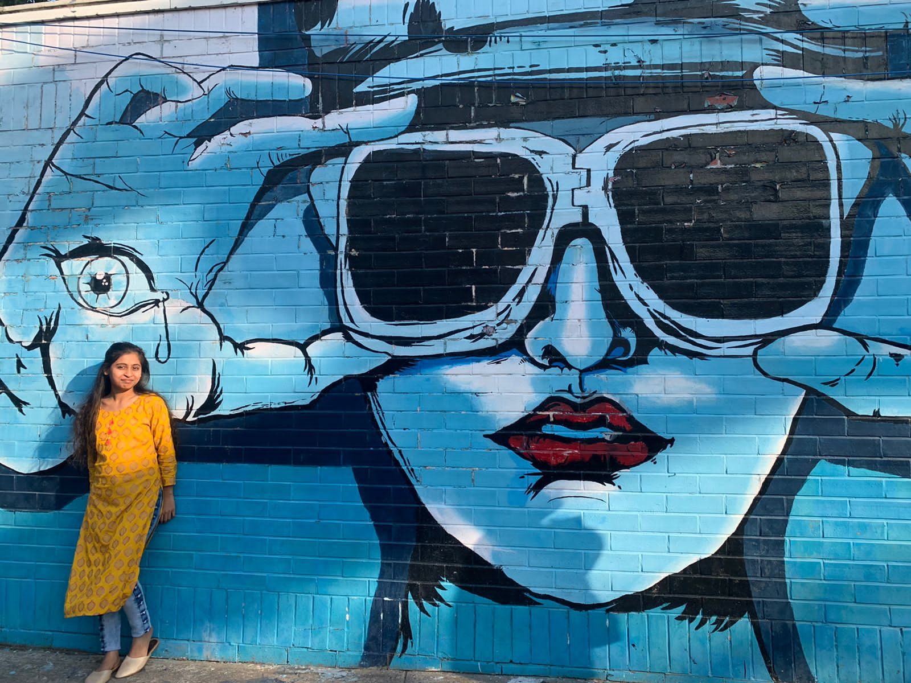

Saumya Saini

Junior Undergraduate
Department of Electrical Engineering
Academic Qualifications
| Year |
Degree/Certificate |
Institute |
| 2020-Present |
B.Tech |
Indian Institute of Technology Kanpur |
| 2020 |
Class XII (CBSE) |
Ramshree Public School, Orai |
| 2018 |
Class X (CBSE) |
Ramshree Public School, Orai |
Work Experience
Quant Intern, Futures First
Skills
C++, C, Python, HTML, CSS, JavaScript
Position Of Responsibilities
- Organizer, Show Management | Antaragni’22
- Part of a 4-tier team responsible for planning and organizing the cultural fest with 60+ events & 4 professional shows
- Responsible for managing creative cell having a budget of around 1.5 lacs to create an exquisite ambiance of festival
- Assisted heads in pre-fest preparations like planning spatial arrangement, getting permissions and booking of venues
-
Senior Election Officer | Election Commission, IIT Kanpur
- Led a team of 15+ Election Officers, ensuring the smooth conduction of the Students’ Gymkhana Elections
- Worked in a 4-tier self-governed body to successfully foster the democratic spirit for free and fair election
- Successfully monitored the campaigning of 30+ candidates and verified their manifestos as per the COC
Others